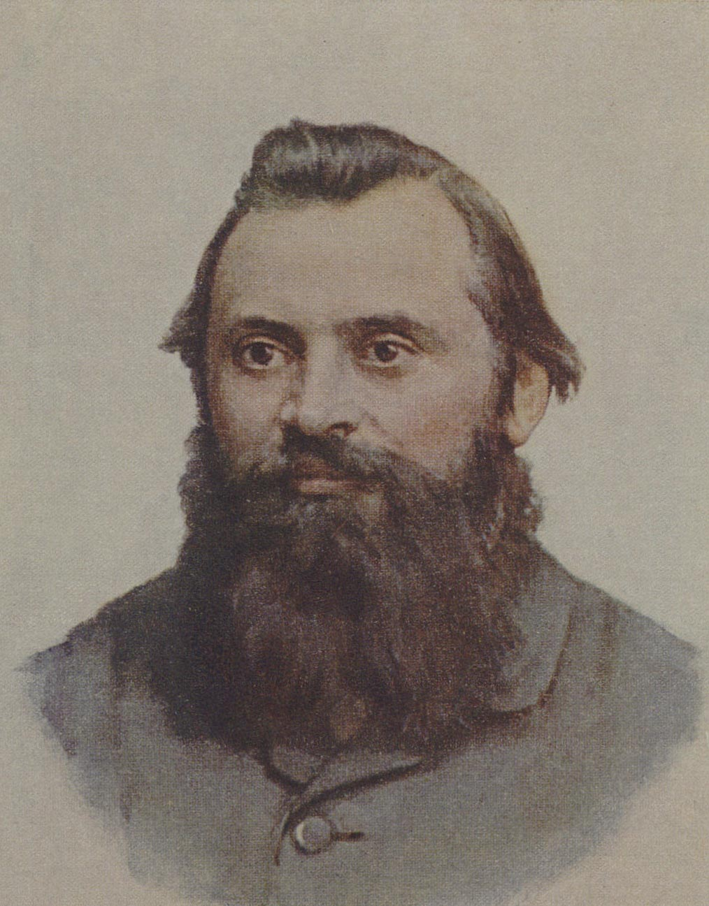
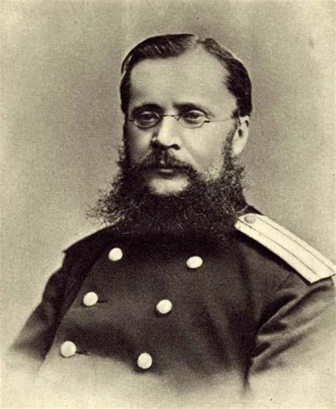
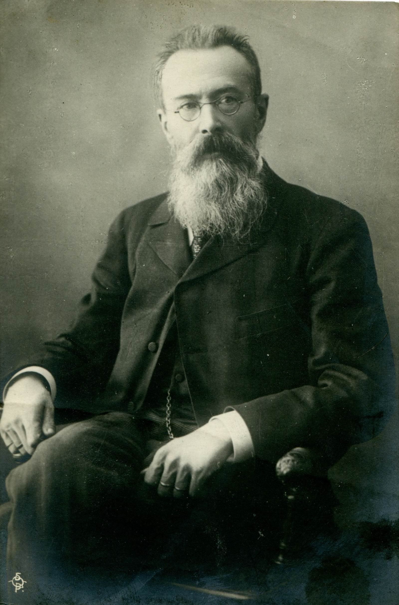

«Могучая кучка» — творческое
содружество русских композиторов, сложившееся в конце 50 —
начале 60-х гг. 19 века. Известно также под названием «Новая
русская музыкальная школа», Балакиревский кружок. В «Могучую
кучку» входили М. А. Балакирев, А. П. Бородин, Ц. А. Кюи, М.
П. Мусоргский, Н. А. Римский-Корсаков. Временно примыкали к
ней А. С. Гуссаковский, H. H. Лодыженский, Н. В. Щербачёв,
отошедшие впоследствии от композиторской деятельности.
Источником образного наименования послужила статья В. В.
Стасова «Славянский концерт г. Балакирева» (по поводу концерта
под управлением Балакирева в честь славянских делегаций на
Всероссийской этнографической выставке в 1867), которая
заканчивалась пожеланием, чтобы славянские гости «навсегда
сохранили воспоминания о том, сколько поэзии, чувства, таланта
и умения есть у маленькой, но уже могучей кучки русских музыкантов».
Понятие «Новая русская музыкальная школа» было выдвинуто самими
членами «Могучей кучки», считавшими себя последователями и
продолжателями дела старших мастеров русской музыки — М. И.
Глинки и А. С. Даргомыжского. Во Франции принято название
«Пятёрка» или «Группа пяти» («Groupe des Cinq») по числу
основных представителей «Могучей кучки».
«Могучая кучка» — одно из вольных содружеств, которые возникали
в пору демократического подъёма 60-х гг. 19 в. в различных областях русской
художественной культуры с целью взаимной поддержки и борьбы за прогрессивные
общественные и эстетические идеалы (литературный кружок журнала «Современник»,
«Артель художников», «Товарищество передвижных художественных выставок»).
Подобно «Артели художников» в изобразительном искусстве, противопоставившей
себя официальному курсу Академии художеств, «Могучая кучка» решительно выступала
против косной академической рутины, отрыва от жизни и пренебрежения современным
требованиями, возглавив передовое национальное направление в русской музыке.
«Могучая кучка» объединила наиболее талантливых композиторов молодого поколения,
выдвинувшихся в конце 50 — начале 60-х гг., за исключением П. И. Чайковского, который
не входил ни в какие группы. Руководящее положение в «Могучей кучке» принадлежало
Балакиреву (отсюда — Балакиревский кружок). Тесно связан с ней был Стасов, сыгравший
важную роль в выработке общих идейно-эстетических позиций «Могучей кучки», в формировании
и пропаганде творчества отдельных её членов. С 1864 систематически выступал в печати Кюи,
музыкально-критическая деятельность которого во многом отражала взгляды и тенденции,
присущие всей «Могучей кучке». Её позиции находят отражение и в печатных выступлениях
Бородина, Римского-Корсакова. Центром музыкально-просветительской деятельности «Могучей кучки»
явилась Бесплатная музыкальная школа (создана в 1862 по инициативе Балакирева и Г. Я. Ломакина),
в концертах которой исполнялись произведения членов «Могучей кучки» и близких ей по
направлению русских и зарубежных композиторов.
Основополагающими принципами для композиторов-«кучкистов» были
народность и национальность. Тематика их творчества связана преимущественно с образами народной
жизни, исторического прошлого России, народного эпоса и сказки, древними языческими верованиями
и обрядами. Мусоргский, наиболее радикальный из членов «Могучей кучки» по своим художественным
убеждениям, с огромной силой воплотил в музыке образы народа, многие его произведения отличаются
открыто выраженной социально-критической направленностью. Народно-освободительные идеи 60-х гг.
получили отражение в творчестве и др. композиторов этой группы (увертюра «1000 лет» Балакирева,
написанная под впечатлением статьи А. И. Герцена «Исполин просыпается»; «Песня тёмного леса»
Бородина; сцена веча в опере «Псковитянка» Римского-Корсакова). Вместе с тем у них проявлялась
тенденция к известной романтизации национального прошлого. В древних, исконных началах народной
жизни и мировоззрения они стремились найти опору для утверждения позитивного нравственного и эстетического идеала.
Одним из важнейших источников творчества служила для композиторов
«Могучей кучки» народная песня. Их внимание привлекала главным образом старинная традиционная
крестьянская песня, в которой они усматривали выражение коренных основ национального музыкального
мышления. Характерные для «кучкистов» принципы обработки народных песенных мелодий нашли отражение
в сборнике Балакирева «40 русских народных песен» (составлен Балакиревым на основе собственных записей,
сделанных во время поездки по Волге с поэтом Н. В. Щербиной в 1860). Много внимания уделял собиранию
и обработке народных песен Римский-Корсаков. Народная песня получила разнообразное преломление в
оперном и симфоническом творчестве композиторов «Могучей кучки». Они проявляли также интерес к
фольклору других народов, особенно восточных. Вслед за Глинкой «кучкисты» широко разрабатывали в
своих произведениях интонации и ритмы народов Востока и тем самым способствовали возникновению у
этих народов собственных национальных композиторских школ.
В поисках правдивой интонационной выразительности «кучкисты» опирались
на достижения Даргомыжского в области реалистической вокальной декламации. Особенно высоко
оценивалась ими опера «Каменный гость», в которой наиболее полно и последовательно осуществлено
стремление композитора к воплощению слова в музыке («Хочу, чтобы звук прямо выражал слово»).
Они считали это произведение, наряду с операми Глинки, основой русской оперной классики.
Творческая деятельность «Могучей кучки» — важнейший исторический этап
в развитии русской музыки. Опираясь на традиции Глинки и Даргомыжского, композиторы-«кучкисты»
обогатили её новыми завоеваниями, особенно в оперном, симфоническом и камерном вокальном жанрах.
Такие произведения, как «Борис Годунов» и «Хованщина» Мусоргского, «Князь Игорь» Бородина,
«Снегурочка» и «Садко» Римского-Корсакова, принадлежат к вершинам русской оперной классики.
Общие их черты — национальная характерность, реалистичность образов, широкий размах и важное
драматургическое значение народно-массовых сцен. Стремление к живописной яркости, конкретности
образов присуще и симфоническому творчеству композиторов «Могучей кучки», отсюда большая роль
в нём программно-изобразительных и жанровых элементов. Бородин и Балакирев явились создателями
руссокого национально-эпического симфонизма. Римский-Корсаков был непревзойдённым мастером
оркестрового колорита, в его симфонических произведениях преобладает картинно-живописное начало.
В камерном вокальном творчестве «кучкистов» тонкий психологизм и поэтическая одухотворённость
сочетаются с острой жанровой характерностью, драматизмом и эпической широтой. Менее значительное
место в их творчестве занимают камерные инструментальные жанры. В этой области произведения
выдающейся художественной ценности были созданы только Бородиным, автором двух струнных квартетов
и фортепианного квинтета. Уникальное место в фортепианной литературе по оригинальности замысла и
колористическому своеобразию занимают «Исламей» Балакирева и «Картинки с выставки» Мусоргского.
В своей новаторской устремлённости «Могучая кучка» сближалась с передовыми
представителями западно-европейского музыкального романтизма — Р. Шуманом, Г. Берлиозом, Ф. Листом.
Высоко ценили композиторы-«кучкисты» творчество Л. Бетховена, которого они считали родоначальником
всей новой музыки. Вместе с тем в их отношении к музыкальному наследию добетховенского периода, а
также к ряду явлений современного им зарубежного исккусства (итальянская опера, Р. Вагнер и др.)
проявились черты одностороннего негативизма и предвзятости. В пылу полемики и борьбы за утверждение
своих идей ими высказывались иногда слишком категорические и недостаточно обоснованные отрицательные суждения.
В русской музыкальной жизни 60-х гг. «Могучей кучке» противостояло
академическое направление, центрами которого были РМО и Петербургская консерватория во главе с
А. Г. Рубинштейном. Этот антагонизм был до известной степени аналогичен борьбе веймарской школы
и лейпцигской школы в немецкой музыке середины 19 в. Справедливо критикуя «консерваторов» за
чрезмерный традиционализм и проявлявшееся ими порой непонимание национально-своеобразных путей
развития русской музыки, деятели «Могучей кучки» недооценивали значения систематического
профессионального музыкального образования. С течением времени острота противоречий между этими
двумя группировками смягчалась, они сближались по ряду вопросов. Так, Римский-Корсаков в 1871
вошёл в состав профессоров Петербургской консерватории.
К середине 70-х гг. «Могучая кучка» как сплочённая группа перестала
существовать. Отчасти это было вызвано тяжёлым душевным кризисом Балакирева и его отходом от
активного участия в музыкальной жизни. Но главная причина распада «Могучей кучки» — во внутренних
творческих расхождениях. Балакирев и Мусоргский неодобрительно отнеслись к педагогической деятельности
Римского-Корсакова в Петербургской консерватории и рассматривали это как сдачу принципиальных позиций.
С ещё большей остротой проявились назревшие в «Могучей кучке» расхождения в связи с поставленной в
1874 в Мариинском театре оперы «Борис Годунов», оценка которой членами кружка оказалась не единодушной.
Бородин видел в распаде «Могучей кучки» проявление естественного процесса творческого самоопределения
и нахождения своего индивидуального пути каждым из входивших в её состав композиторов.
«...Так всегда бывает во всех отраслях человеческой деятельности, — писал он в 1876 певице
Л. И. Кармалиной. — По мере развития деятельности индивидуальность начинает брать перевес над школою,
над тем, что человек унаследовал от других». Одновременно он подчёркивал, что «общий склад музыкальный,
общий пошиб, свойственный кружку, остались». «Кучкизм» как направление продолжал развиваться и далее.
Эстетические принципы и творчество «Могучей кучки» оказали влияние на многих русских композиторов более
молодого поколения. С «Могучей кучкой» преемственно связан Беляевский кружок, который, однако, не обладал
присущим ей боевым новаторским запалом и не имел определённой идейно-художественной платформы.
| КОМПОЗИТОРЫ |
ПРОИЗВЕДЕНИЯ |
| Оперы |
Инстурментальные сочинения |
Вокальные сочинения |

М. А. Балакирев
|
Нет |
- Увертюра на тему испанского марша
- Музыка к трагедии Шекспира «Король Лир»
- Увертюра на темы трёх русских песен
- Концерт №1: для фортепиано с оркестром
- Концерт №2: для фортепиано с оркестром
- «Исламей», восточная фантазия
- Романс для виолончели и фортепиано
- «1000 лет», музыкальная картина
- Сюита для фортепиано в 4 руки
- «Тамара», симфоническая поэма
- Две симфонии
- Сюита
|
- «Три забытых романса» (1855)
- «Двадцать песен» (1858-1865)
- «Десять песен» (1895—1896)
- «Десять песен» (1903—1904)
- «Два романса» (1909)
|

Ц. А. Кюи
|
- Кавказский пленник
- Сын мандарина
- Млада
- Вильям Ратклиф
- Анджело
- Пир во время чумы
- Капитанская дочка
- Красная шапочка
- Кот в сапогах
- Иванушка-дурачок
- Снежный богатырь
- Матео Фальконе
|
Нет |
- Ave Maria: Для одного голоса
- Вечерняя заря
- Меня холодным люди называют
- Истомленная горем
|

Н. А. Римский-Корсаков
|
- Псковитянка
- Майская ночь
- Снегурочка
- Млада
- Ночь перед Рождеством
- Садко
- Моцарт и Сальери
- Боярыня Вера Шелога
- Царская невеста
- Сказка о царе Салтане
- Сервилия
- Кащей Бессмертный
Всего более 30 опер
|
- Три симфонии
- Симфониетта на русские темы
- Антар, симфоническая сюита
- Шехеразада, симфоническая сюита
- Испанское каприччио
- Концерт для фортепиано с оркестром
- Светлый праздник, увертюра
|
- 79 романсов
- хоры с оркестром и a capella
- «100 русских народных песен»
- «40 народных песен»
|

М. П. Мусоргский
|
- Борис Годунов
- Хованщина
- Женитьба
- Сорочинская ярмарка
- Саламбо
|
- Скерцо для оркестра
- Маленький марш для оркестра
- Интермеццо
- Ночь на Лысой горе, симфоническая картина
- Взятие Карса
- Картинки с выставки, цикл пьес
|
- Сборник романсов и песен (1857-1866)
- Эпизоды из детской жизни (1870)
- «Без солнца» (1874)
- Песни и пляски смерти
- Романсы и песни
|

А. П. Бородин
|
|
- Симфония №1
- Симфония №2 "Богатырская"
- "В Средней Азии", симфоническая картина
- Патетическое адажио
- Маленькая сюита
- Скерцо
- Полька
- Мазурка
- Тарантелла
|
- Серенада 4-х кавалеров одной даме
- Романсы и песни для голоса и ф-но
- Песня тёмного леса
- Море, баллада
|